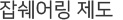

HOME > Recruit > 인사복지제도
인사복지제도
personal system
인사제도
- 하나투어는 개개인의 업무 실적 평가와 능력주의 인사를 바탕으로 2001년부터 전 직원 연봉제를 실시하고 있습니다. 과거 호봉제가 가지는 일률적 급여 배분에서 탈피하여, 구성원 개개인이 본인의 노력에 따른 대가를 기대할 수 있으며, 회사 또한 조직성원이 열심히 일 할 수 있는 동기부여를 기대할 수 있는 제도입니다.
- 
- 하나투어는 잡 쉐어링'(job-sharing·일자리 나누기) 제도를 인적자원의 효율적 관리와 고용 안정을 위하여 도입하고 있습니다. 이는 직원의 정년고용을 보장하는 대신 주중 근무일수를 줄이고 그에 따라 급여를 줄여가는 제도입니다. 하나투어는 정년을 기존의 55세에서 잡쉐어링제도를 도입한 이후 65세로 연장하고 있습니다.
- 하나투어는 직무순환제도(Job Rotation)를 운영하고 있습니다. 회사는 외부환경에 대처할 수 있는 유연성을 높일 수 있으며, 직원은 직무영역을 넓히고, 다방면의 경험, 지식 등을 쌓아 하나투어의 인재상인 여행전문가가 될 수 있는 인재양성제도입니다. 직무순환제는 정기 인사이동과 함께 수시로 사내공모를 통해 이루어지고 있습니다.
- 하나투어는 직원의 사기진작을 위해 회사의 수익을 직원에게 바로 분배 할 수 있는 성과급제도를 철저하게 운영하고 있습니다. 년간 회사의 초과목표달성분에 따라 성과급이 지급됩니다. 성과급은 매 분기별 성과급과 연말성과급 등이 있습니다.
- 하나투어는 일과 삶의 균형을 위한 생산적인 근무형태로 유연근무제를 운영하고 있으며 재택근무제, 시차출퇴근제, 재량근무제를 운영하고있습니다.
- 하나투어는 윤리경영의 일환으로 투명하고 건전한 조직문화를 만들기위한 임직원의 불공정한 업무처리 윤리규정위반 사항 등을 신고하는 내부고발제도를 운영하고 있습니다.
복지제도
- 하나투어는 전 직원 모두에게 1년 3~4번 해외 출장 기회를 부여하고, 입사 1년 이하의 직원들에게는 휴가를 쓰지 않고 해외 여행을 할 수 있는 기회를 제공하고 있습니다.
- 하나투어는 각종 동호회(독서, 스키, 농구, 야구, 축구, 등산, 봉사활동, 여행 등)를 적극적으로 권장하고, 지원해주어 직원들의 삶의 질을 높이고, 사우애를 증진하여 신나는 일터로 만들어줍니다.
- 항상 학습하는 조직문화를 만들어가기 위해, 하나투어의 직원교육 부문에 아낌없는 투자를 진행하고 있습니다. 사외교육비용, 전문안내원 소양교육비용을 전액지원하고 있으며, 직무/ 직책별 교육을 수시로 진행하고 있습니다.
- 하나투어는 직원들의 혁신과 개선의지를 지원하여 자아/꿈을 실현하는 직장이 될 수 있도록 하나킹(HANAKING)제도, 하나벤쳐(HANA VENTURE)제도를 운영하고 있으며 자녀학자금, 학원비, 체력 단련비 등을 지급하고 있습니다.
- 하나투어는 직원들을 위해 웨딩컨설팅 할인, 직원할인몰 운영, 콘도 회원권 제공 및 각종 경조금을 지원하여 사원들이 신바람 나게 일할 수 있는 터전을 제공합니다.